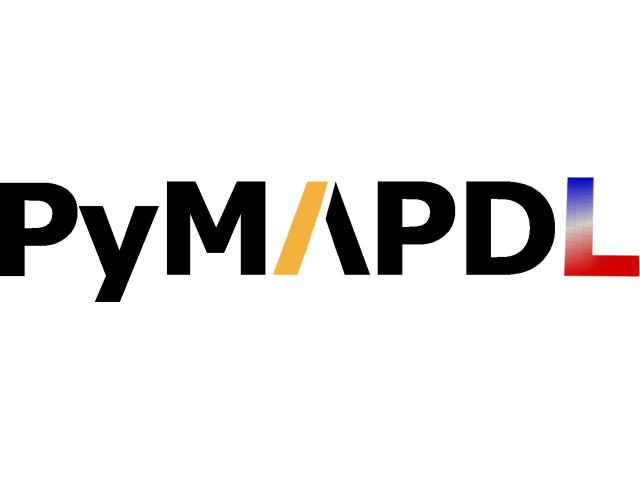
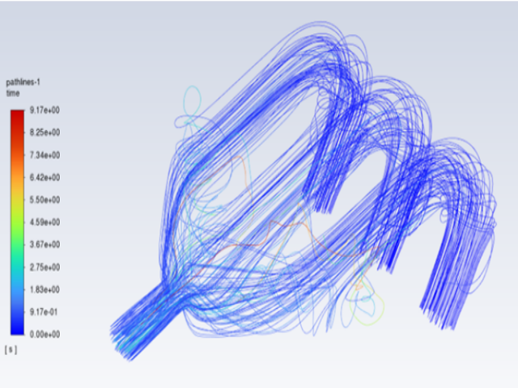
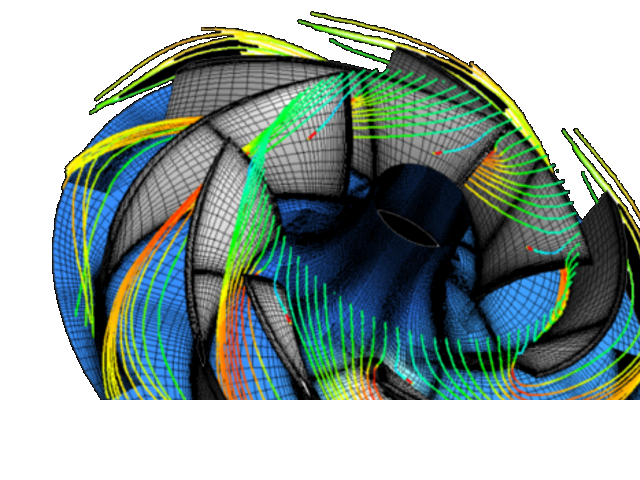
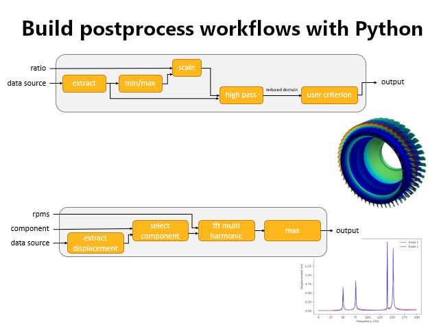

PyAnsys libraries More libraries

PyMAPDL
Python interface to MAPDL (Mechanical APDL)
FEA MAPDL Automation

PyFluent
Python interface to Ansys Fluent
CFD Fluent Automation

PyAnsys
Python interface to Ansys
Automation

PyDPF-Core
Python interface to Ansys DPF (Data Processing Framework)
Post-processing DPF Automation
PyAnsys Blogs More blogs
How we support our users all over the world
Pre-simulation
Define your simulation setup by specifying the geometry in a flexible, parametric format.
During simulation
Run high-fidelity simulations and gather comprehensive results that reflect the dynamics of your system.
Post simulation
Extract, visualize, and interpret key data from your simulation to drive the next phase of your project.